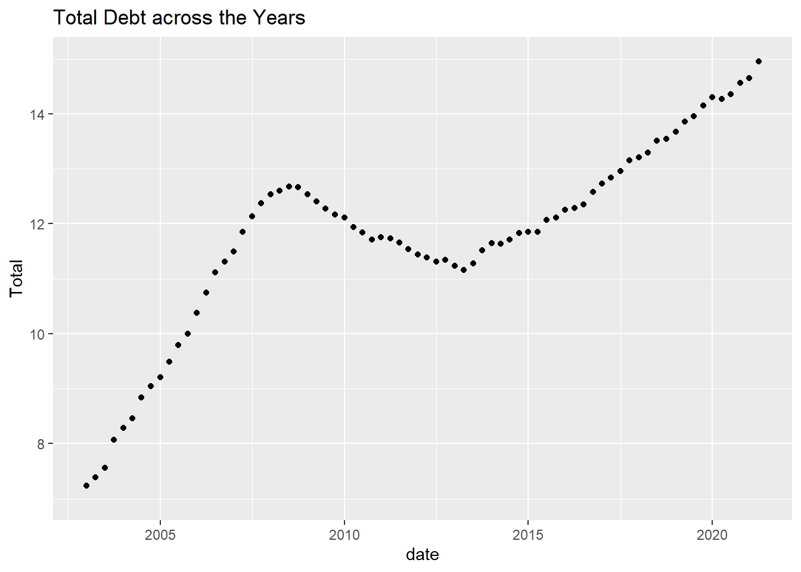
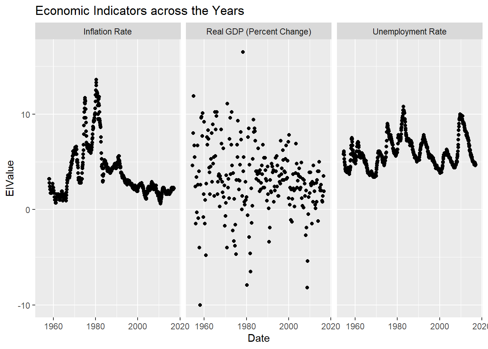

The dataset used is debt. It contains 8 variables and 74 observations. The variables contain information about different types of debt such as mortgage and student loans. This information is presented quarter-wise from 2003 until 2021. However, the data for 2021 is only of 2 quarters.
Generated by summarytools 1.0.1 (R version 4.2.1) 2022-08-25
The data is not already tidy, the various types of debt need to be pivoted into rows in order to be analysed easily. Moreover, the year and quarter column is of character type and needs to be converted into a date format.
#number of rows=74#number of columns=8#number of cases=6#expected rowsrows=74*6print("Expected number of rows:")
[1] "Expected number of rows:"
rows
[1] 444
# expected columns col=(8-6)+2print("Expected number of columns:")
debt<-debt%>%mutate(date =parse_date_time(`Year and Quarter`, orders="yq"))%>%select(-'Year and Quarter')debt<-debt%>%select(date,Type_Debt,Amount,everything())debt
The visualisation below depicts that overall, across the years, the debt has risen. However, this was not a linear rise as the debt declined from around 2009 to around 2013, before it started rising again. Since the debt data is continuous, I represented it in the form of a scatterplot.
ggplot(debt, aes(date,`Total`)) +geom_point() +labs(title ="Total Debt across the Years")+ylim(7,15)

From the pie chart below, it is evident that majority of the debt comes from mortgage, followed by car loans and student loans which are similar in size. This corresponds closely to the common needs of housing, education and transportation. A pie chart was used because it could depict the different kinds of debt and what proportion of these kinds contribute to the total debt.
The dataset has the target interest rates as well as details of the GDP, unemployment rate and inflation rate between 1954-2017. It has 10 variables and 904 observations. A few of the variables such as the Federal Funds Upper Target, Federal Funds Lower Target and Real GDP, have more than half of the total observations missing.
Generated by summarytools 1.0.1 (R version 4.2.1) 2022-08-25
Tidy Data
The data is not already tidy, some of the columns need to be pivoted in order for the final dataset to have federal funds rates and economic indicators as specific columns. Moreover, the date is spread across three columns and needs to be consolidated into one column.
The calculation for the number of rows that will be present after pivoting was done in 2 steps as 2 different pivots were used.First, the number of rows that would be present after 1 pivot was calculated and then this value was multiplied by the number of columns that would be pivoted during the second run.
#number of rows=904#number of columns=8#number of cases=7#expected rowsrows=(904*4)rows=rows*3print("Expected number of rows:")
[1] "Expected number of rows:"
rows
[1] 10848
# expected columns col=(8-4-3)+4print("Expected number of columns:")
The Effective Federal Funds Rate first rose and then with fluctuations in between whereas the Federal Funds Target Rate has continuously declined over the years. There does not seem to be much change in the Upper and Lower Targets, however, this issue could be because the scale used may not be allowing the changes to be seen distinctly.
While unemployment rates and inflation rates seem to have a similar trend of fluctuating(although the rise and fall does not necessarily happen at the same time) the Real GDP has no discernible pattern.
ggplot(FundsRate, aes(Date,`TRValue`)) +geom_point() +labs(title ="Target Rates across the Years")+facet_wrap(vars(TargetRates))
ggplot(FundsRate, aes(Date,`EIValue`)) +geom_point() +labs(title ="Economic Indicators across the Years")+facet_wrap(vars(EconomicIndicators))

Visualising Part-Whole Relationships
I plotted a stacked bar chart since there were two categorical variables and one continuous variable. However, this does not seem to depict anything useful as the proportion of the target rates in all the bars look similar.
Plotting a pie chart or doughnut chart would not be useful in this case as the rates/ economic indicators are not representative of a total larger value.
---title: "Challenge 6 "author: "Mekhala Kumar"description: "Visualizing Time and Relationships"date: "08/23/2022"format: html: df-print: paged toc: true code-copy: true code-tools: true css: "styles.css"categories: - challenge_6 - fed_rate - debt---```{r}#| label: setup#| warning: false#| message: falselibrary(readr)library(ggplot2)library(tidyverse)library(readxl)library(lubridate)knitr::opts_chunk$set(echo =TRUE, warning=FALSE, message=FALSE)```## Challenge Overview::: panel-tabset## Debt Dataset## Description of the DataThe dataset used is debt. It contains 8 variables and 74 observations. The variables contain information about different types of debt such as mortgage and student loans. This information is presented quarter-wise from 2003 until 2021. However, the data for 2021 is only of 2 quarters.```{r}#debt<- read_excel("_data/debt_in_trillions.xlsx",col_names=c("year_quart","mortgage","he_revolve","auto_loan","cred_card","stud_loan","other","total"),skip=1)debt<-read_excel("_data/debt_in_trillions.xlsx")dim(debt)print(summarytools::dfSummary(debt,varnumbers =FALSE,plain.ascii =FALSE, style ="grid", graph.magnif =0.70, valid.col =FALSE),method ='render',table.classes ='table-condensed')```## Tidy DataThe data is not already tidy, the various types of debt need to be pivoted into rows in order to be analysed easily. Moreover, the year and quarter column is of character type and needs to be converted into a date format.```{r}#number of rows=74#number of columns=8#number of cases=6#expected rowsrows=74*6print("Expected number of rows:")rows# expected columns col=(8-6)+2print("Expected number of columns:")coldebt<-pivot_longer(debt, 2:7, names_to ="Type_Debt", values_to ="Amount")dim(debt)debt<-debt%>%mutate(date =parse_date_time(`Year and Quarter`, orders="yq"))%>%select(-'Year and Quarter')debt<-debt%>%select(date,Type_Debt,Amount,everything())debt```## Time Dependent VisualisationThe visualisation below depicts that overall, across the years, the debt has risen. However, this was not a linear rise as the debt declined from around 2009 to around 2013, before it started rising again. Since the debt data is continuous, I represented it in the form of a scatterplot.```{r}ggplot(debt, aes(date,`Total`)) +geom_point() +labs(title ="Total Debt across the Years")+ylim(7,15)```## Visualising Part-Whole RelationshipsFrom the pie chart below, it is evident that majority of the debt comes from mortgage, followed by car loans and student loans which are similar in size. This corresponds closely to the common needs of housing, education and transportation. A pie chart was used because it could depict the different kinds of debt and what proportion of these kinds contribute to the total debt.```{r}ggplot(debt, aes(x="", y=Amount, fill=Type_Debt)) +geom_bar(stat="identity", width=1) +coord_polar("y", start=0)+labs(title ="Types of Debt")```:::## Federal Funds Rate## Description of dataThe dataset has the target interest rates as well as details of the GDP, unemployment rate and inflation rate between 1954-2017. It has 10 variables and 904 observations. A few of the variables such as the Federal Funds Upper Target, Federal Funds Lower Target and Real GDP, have more than half of the total observations missing.```{r}FundsRate <-read_csv("_data/FedFundsRate.csv")dim(FundsRate)print(summarytools::dfSummary(FundsRate,varnumbers =FALSE,plain.ascii =FALSE, style ="grid", graph.magnif =0.70, valid.col =FALSE),method ='render',table.classes ='table-condensed')```## Tidy DataThe data is not already tidy, some of the columns need to be pivoted in order for the final dataset to have federal funds rates and economic indicators as specific columns. Moreover, the date is spread across three columns and needs to be consolidated into one column.\The calculation for the number of rows that will be present after pivoting was done in 2 steps as 2 different pivots were used.First, the number of rows that would be present after 1 pivot was calculated and then this value was multiplied by the number of columns that would be pivoted during the second run.```{r}#number of rows=904#number of columns=8#number of cases=7#expected rowsrows=(904*4)rows=rows*3print("Expected number of rows:")rows# expected columns col=(8-4-3)+4print("Expected number of columns:")colFundsRate <- FundsRate%>%mutate(Date =str_c(Year, Month, Day, sep="-"),Date =ymd(Date))FundsRate=subset(FundsRate,select=-c(1,2,3))FundsRate<-FundsRate%>%select(Date,everything())FundsRate<-pivot_longer(FundsRate, 2:5, names_to ="TargetRates", values_to ="TRValue")FundsRate<-pivot_longer(FundsRate, 2:4, names_to ="EconomicIndicators", values_to ="EIValue")dim(FundsRate)```## Time Dependent VisualisationThe Effective Federal Funds Rate first rose and then with fluctuations in between whereas the Federal Funds Target Rate has continuously declined over the years. There does not seem to be much change in the Upper and Lower Targets, however, this issue could be because the scale used may not be allowing the changes to be seen distinctly.\While unemployment rates and inflation rates seem to have a similar trend of fluctuating(although the rise and fall does not necessarily happen at the same time) the Real GDP has no discernible pattern.```{r}ggplot(FundsRate, aes(Date,`TRValue`)) +geom_point() +labs(title ="Target Rates across the Years")+facet_wrap(vars(TargetRates))ggplot(FundsRate, aes(Date,`EIValue`)) +geom_point() +labs(title ="Economic Indicators across the Years")+facet_wrap(vars(EconomicIndicators))```## Visualising Part-Whole RelationshipsI plotted a stacked bar chart since there were two categorical variables and one continuous variable. However, this does not seem to depict anything useful as the proportion of the target rates in all the bars look similar.\Plotting a pie chart or doughnut chart would not be useful in this case as the rates/ economic indicators are not representative of a total larger value.```{r}ggplot(FundsRate, aes(fill=TargetRates, y=EIValue, x=EconomicIndicators)) +geom_bar(position="stack", stat="identity") ```:::